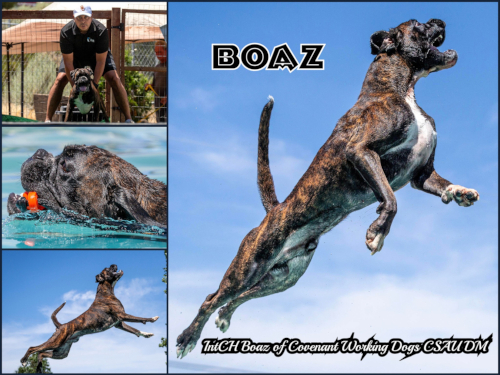

Planned breeding for 2025: Kaya Jibaya von Bachbett, CGC, TKN, to Boaz of Convenant Working Dogs, CSAU, DM.
- Boaz
 - Jibaya


On May 8, 2024 Kaya Jibaya von Bachbett gave birth to her first litter of three healthy, gorgeous brindle pupppies sired by Cliff vom Grand Kevin, Police K9, IPO2, DPO1, FH1.